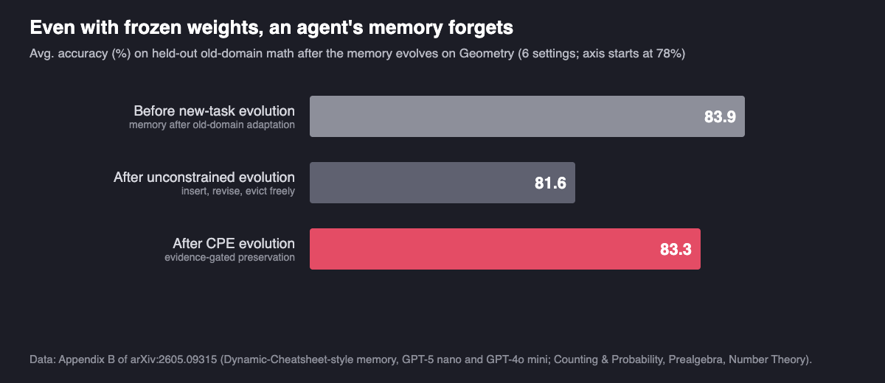

Does Recursive Self-Improvement Make AI Agents Forget?
When LLM agents rewrite themselves to master new tasks, they often get worse at the tasks they had already mastered. Preserving what works has to be part of the loop.
By Ye Yu and Haohan Wang · · About our 2026 arXiv preprint (arXiv:2605.09315)
Recursive self-improvement, an AI system that improves itself and then lets the improved version make the next improvement, has moved from thought experiment to working systems: agents now rewrite their own code, prompts, tools and memory, and keep the changes that score better. The usual scorecard asks one question, whether the agent got better at the new tasks. Our paper, Do Self-Evolving Agents Forget? Capability Degradation and Preservation in Lifelong LLM Agent Adaptation, by Ye Yu, Xiaopeng Yuan, Haibo Jin, Heming Liu, Yaoning Yu and Haohan Wang (University of Illinois Urbana-Champaign), asks the other one: what happens to the tasks the agent had already mastered? Across all four ways agents evolve themselves, workflow, skills, model weights and memory, the answer is that old capabilities tend to erode. A simple retention constraint recovers much of the loss without slowing learning on the new tasks.
Key findings
- Do Self-Evolving Agents Forget? (Yu et al., University of Illinois Urbana-Champaign, arXiv 2026) reports that self-evolving LLM agents lose previously mastered capabilities when they adapt to new tasks, across all four evolution channels studied: workflow, skill and tool, model, and memory evolution.
- When an EvoAgentX agent rewrote its workflow for harder τ²-Bench tasks with a GPT-5.1 optimizer, unconstrained evolution left 41.8% success on the simpler tasks it started from; Capability-Preserving Evolution (CPE) kept 52.8% and also raised complex-task success from 23.9% to 33.4%.
- Forgetting happens even when model weights never change: in the paper's memory experiment, unconstrained updates to an agent's external memory lowered average old-domain math accuracy from 83.9% to 81.6%, while evidence-gated memory preservation kept it at 83.3%.
- The same pattern appeared in skill-library evolution on MATH (Algebra accuracy 82.6% vanilla vs 84.4% with CPE for GPT-4o mini) and in STaR self-training on MedMCQA (Anatomy 68.9% vs 70.3% for Llama3.2-3B), where the gains from preservation were smaller but consistent.
What is recursive self-improvement in AI agents?
Recursive self-improvement (RSI) is a loop in which a system modifies itself, and the modified system performs the next modification. The idea is old; what changed is that it now runs. The Darwin Gödel Machine rewrites its own coding-agent code and keeps an archive of variants. AIDE² lets a research agent edit its own code and benchmark the result. In April 2026, ICLR hosted a workshop on AI with Recursive Self-Improvement that treats RSI as a practical systems problem and lists long-horizon stability and regression risk among its open questions.
Most of these systems change an agent's harness, its prompts, workflow, tools and memory, while the base model stays fixed. Some also self-train the model. The research literature mostly calls them self-evolving agents. Our paper uses that term; the RRSI paper discussed below describes the same kind of loop as a form of RSI at the agent-system level. Either way, each accepted change becomes the starting point for the next one, and that is exactly where forgetting can accumulate.
Key terms
- Recursive self-improvement (RSI)
- A loop in which an AI system changes itself and the changed system makes the next change.
- Self-evolving agent
- An LLM agent that updates its own workflow, skills and tools, model parameters or memory from experience, without a human making each change.
- Capability erosion under self-evolution
- The paper's name for the loss of previously mastered capabilities as an agent adapts itself to a new task distribution.
- Catastrophic forgetting
- The classic continual-learning failure in which training a neural network on new data overwrites what it learned earlier; capability erosion extends it beyond weights.
- Capability-Preserving Evolution (CPE)
- The paper's stabilization principle: every self-update optimizes the new tasks plus a penalty for disrupting structures that earlier tasks relied on.
- Stability–plasticity tradeoff
- The balance between keeping old capabilities (stability) and learning new ones (plasticity), controlled in CPE by the strength of the penalty.
Do self-evolving AI agents forget what they learned?
The paper tests one scenario in every channel: an agent first becomes good at one task distribution, then evolves itself on a different one, and is then re-tested on the first. Each channel uses an existing self-evolution framework, run once unconstrained and once with CPE, under the same budget.
![Four panels, one per self-evolution channel. Workflow: rewrites accumulate validation steps and detours; CPE anchors signatures from the seed workflow; tau-squared-Bench simple-task success with GPT-5.1 goes from 41.8% vanilla to 52.8% with CPE. Skills and tools: new specialised skills evict earlier general ones in a 30-skill bank; CPE merges related skills and protects high-utility ones; MATH Algebra accuracy for GPT-4o mini goes from 82.6% to 84.4%. Model weights: classic catastrophic forgetting; CPE adds a Fisher-weighted EWC-style penalty; MedMCQA Anatomy accuracy for Llama3.2-3B goes from 68.9% to 70.3%. Memory: new notes evict or out-compete earlier ones while weights stay fixed; CPE protects repeatedly verified memories; old-domain math accuracy goes from 81.6% to 83.3%, against 83.9% before evolution.](imgs/recursive_self_improvement_agents_forget/figure_channels.png)
- Workflow. EvoAgentX on τ²-Bench (airline, retail and telecom customer service), with GPT-5.1 or GPT-5 nano as optimizer. A seed workflow is built on simple tasks, then evolved on complex ones; failed trajectories go back to an optimizer LLM that rewrites the workflow.
- Skills and tools. A MemSkill-style agent on MATH with a bank capped at 30 skills, evolving Algebra → Geometry → Number Theory; the least-used skills are evicted when the bank is full.
- Model. STaR self-training with LoRA on MedMCQA, Anatomy → Biochemistry → Dental, with Qwen3-0.6B and Llama3.2-3B: the model generates rationales, keeps the correct ones and fine-tunes on them.
- Memory. A Dynamic-Cheatsheet-style memory of strategy notes, first adapted to Counting & Probability, Prealgebra and Number Theory, then evolved on Geometry, with the model frozen.
In all four, unconstrained evolution degraded earlier capability, and the paper describes three forms the erosion takes. Retrospective decay: accuracy on old tasks drops. Behavioral policy drift: evolved workflows grow longer, adding validation operators and detours that each looked reasonable for a hard case, until the workflow becomes over-defensive and rejects valid actions on routine ones. Generalization erosion: new specialised skills and memories crowd out general ones, so the skills that served Geometry are evicted once Number Theory arrives.
Why does self-improvement erase old capabilities?
The paper's explanation is the same for all four channels. Each one repeatedly rewrites a mutable store, a workflow, a skill bank, a set of weights or a memory bank, and each rewrite is chosen only for the current tasks. If the change that helps new tasks also moves the store along directions that old tasks depend on, old-task loss rises. A short local analysis makes this precise: for a small update, the increase in old-task loss is proportional to how much the update overlaps with the directions the old tasks are sensitive to, not simply to the size of the update.
This is catastrophic forgetting, a long-studied problem in continual learning, generalized from weights to everything an agent can change about itself. It also explains why an RSI loop that only keeps changes which raise the score on the current benchmark can drift: nothing in that acceptance rule notices when a change breaks something the benchmark does not measure.
How can a self-improving agent keep its old capabilities?
Capability-Preserving Evolution adds one term to every self-update: improve the new tasks, plus a penalty, weighted by λ, for departing from what supported earlier tasks. Setting λ = 0 recovers ordinary self-evolution. The paper instantiates the penalty differently per channel:
- Workflow: behavioral signatures extracted from the seed workflow (core objectives, output constraints, failure-avoidance behaviors) are injected into the optimizer to discourage disruptive rewrites.
- Skills: candidate skills are checked against preserved capability signatures, related skills are merged to free space, and historically useful skills are protected from deletion.
- Model: an Elastic Weight Consolidation (EWC) style penalty weights each parameter by its Fisher-estimated importance to earlier domains.
- Memory: memories gain stability each time they are self-verified as useful, and stable memories are protected from rewrite or eviction while low-evidence ones stay adaptable.
Results after the full evolution sequence, unconstrained (vanilla) versus CPE:
| Channel and setting | Evaluated on | Vanilla | CPE |
|---|---|---|---|
| Workflow, GPT-5.1 optimizer | τ²-Bench simple tasks (retained), avg. | 41.8 | 52.8 |
| Workflow, GPT-5.1 optimizer | τ²-Bench complex tasks (new), avg. | 23.9 | 33.4 |
| Workflow, GPT-5 nano optimizer | τ²-Bench simple tasks (retained), avg. | 46.8 | 55.7 |
| Workflow, GPT-5 nano optimizer | τ²-Bench complex tasks (new), avg. | 22.8 | 26.7 |
| Skills, GPT-5 nano | MATH Algebra (first domain) | 84.3 | 85.9 |
| Skills, GPT-4o mini | MATH Algebra (first domain) | 82.6 | 84.4 |
| Model, Qwen3-0.6B | MedMCQA Anatomy (first domain) | 29.4 | 30.5 |
| Model, Llama3.2-3B | MedMCQA Anatomy (first domain) | 68.9 | 70.3 |
| Memory, avg. of 6 domain–model settings | Old-domain math (83.9 before evolution) | 81.6 | 83.3 |
Accuracy or success rate in %, from Tables 1–4 and Appendix B of the paper. CPE was at least as good as vanilla in every per-domain cell the paper reports; in the workflow table, three of the twelve cells are ties.
Two results stand out. First, preservation did not cost new-task learning; in the workflow experiments it improved it, because the unconstrained workflows had become bloated. Second, the memory experiment shows forgetting in a system whose weights never move.

How does this compare with other work on recursive self-improvement?
- RSI systems that keep what scores better. The Darwin Gödel Machine: Open-Ended Evolution of Self-Improving Agents (Zhang, Hu, Lu, Lange and Clune, 2025) modifies its own code and validates each change on coding benchmarks, raising SWE-bench performance from 20.0% to 50.0%. Recursive self-improvement of AI research agents (Srikanth, Zhao, Xu, Wu and Jiang, 2026) found seven successive improvements in an 8-day autonomous run of AIDE², with gains that transfer to four held-out benchmarks. Both show the loop can work. DGM's archive of earlier agents and AIDE²'s hidden evaluations are themselves ways of not losing ground; our paper measures directly what happens to old tasks when the loop runs without such safeguards on a shifted task distribution.
- Regularizing the RSI loop. RRSI: Regularized Recursive Self-Improvement of Agent Harnesses (Xia, Han, Wang, …, Pfister and Lee, 2026) reaches a closely related conclusion from a different angle: unconstrained harness evolution overfits to the tasks it evolves on, and constraining proposals and selection gave up to 4.3 points on five out-of-distribution benchmarks with 30% fewer policy tokens. RRSI targets generalization to unseen tasks; our paper targets retention of tasks already mastered. Both find that the loop needs a regularizer, and in both the constrained loop produced a leaner agent.
- Gating updates. HarnessEvolve: Learning from Reference Trajectories for Reliable Agent Self-Evolution (Jiang et al., 2026) names catastrophic forgetting as one of three obstacles and accepts a harness update only if it improves the current batch without degrading recent ones. That acceptance gate and CPE's penalty are two complementary ways to protect old capability.
- Safety drift. Your Agent May Misevolve: Emergent Risks in Self-evolving LLM Agents (Shao et al., ICLR 2026) studies the same four pathways, model, memory, tool and workflow, and finds that safety alignment can degrade as memory accumulates. Our paper studies functional capability rather than safety; together they suggest that anything an evolving agent does not actively protect can drift.
- How far RSI has really gone. Recursive Self-Improvement in AI: From Bounded Self-Refinement to Autonomous Research Loops (Chen, Wang and Qu, 2026) surveys 1,250 arXiv papers and separates bounded self-refinement, which is established practice, from open-ended RSI, which it finds still limited on every measured axis. The experiments in our paper sit on the bounded side: a few evolution stages under a controlled task shift.
The underlying idea is older than any of these. Elastic Weight Consolidation (Kirkpatrick et al., PNAS 2017), which CPE uses for the model channel, was designed for networks trained on one task after another. What is new is that an agent's capability now lives in many places besides its weights, and each of them can forget.
What this does not show
- Not open-ended RSI. The experiments run a small number of evolution stages (three domains for skills and models, one shift for workflows and memory) under controlled distribution shifts. Whether erosion compounds, saturates or self-corrects over hundreds of RSI iterations is not tested.
- Small gains in two channels. In skill and model evolution the vanilla–CPE gaps are about 0.1 to 2.6 points, and the paper reports single runs without error bars, so those differences should be read as consistent but modest.
- The size of forgetting itself. For workflow, skill and model evolution the tables compare vanilla and CPE after evolution; the before-and-after decline is shown in trajectory figures rather than tables. Only the memory experiment reports the pre-evolution number (83.9%) in text.
- Simple preservation methods. The authors describe their CPE instantiations as intentionally lightweight (anchors, merging, EWC, evidence gating). Better mechanisms, or one that coordinates all four channels at once, may do better.
- Small and mid-size models. The model-evolution experiments use Qwen3-0.6B and Llama3.2-3B; frontier-scale self-training was not tested.
- No code release is listed in the arXiv version.
Frequently asked questions
Does recursive self-improvement make AI agents forget?
Often, yes, at least in today's bounded self-improvement loops. Do Self-Evolving Agents Forget? (Yu et al., arXiv 2026) found that when LLM agents rewrite their workflows, skill libraries, model weights or memory to handle new tasks, performance on earlier tasks tends to erode. The authors call this capability erosion under self-evolution.
What is recursive self-improvement in AI?
Recursive self-improvement (RSI) is a loop in which an AI system changes itself and the improved version makes the next change. In 2026 most working examples change an agent's code, prompts, tools or memory rather than the underlying model, for example the Darwin Gödel Machine and AIDE²; ICLR 2026 held a workshop on the topic.
Why do self-evolving agents lose old skills?
Because every self-update rewrites a shared, mutable store, whether a workflow, a skill bank, weights or a memory bank, and it is optimized only for the new tasks. Changes that help the new tasks can overwrite structures that earlier tasks relied on; the paper shows this happens whenever the update moves along directions that matter for old tasks.
How can a self-improving agent keep its old capabilities?
By adding an explicit retention constraint to every self-update. The paper's Capability-Preserving Evolution (CPE) anchors workflows to behavior that already worked, merges skills instead of evicting them, penalizes changes to important weights, and protects repeatedly verified memories. In workflow evolution with a GPT-5.1 optimizer, CPE raised retained simple-task success on τ²-Bench from 41.8% to 52.8% while also improving complex-task success from 23.9% to 33.4%.
Citation
@article{yu2026selfevolving,
title = {Do Self-Evolving Agents Forget? Capability Degradation and Preservation in Lifelong LLM Agent Adaptation},
author = {Yu, Ye and Yuan, Xiaopeng and Jin, Haibo and Liu, Heming and Yu, Yaoning and Wang, Haohan},
journal = {arXiv preprint arXiv:2605.09315},
year = {2026}
}Related from our lab
- RAG that learns over time: building lasting source knowledge into LLM agents
- Agent primitives: reusable building blocks for multi-agent systems
- The evolution of prompt optimization, from perturbation to gradient-like methods
- When more chain-of-thought reasoning hurts LLM accuracy
- DREAM Lab preprints
Paper: Ye Yu, Xiaopeng Yuan, Haibo Jin, Heming Liu, Yaoning Yu, Haohan Wang. “Do Self-Evolving Agents Forget? Capability Degradation and Preservation in Lifelong LLM Agent Adaptation.” arXiv:2605.09315, May 2026. University of Illinois Urbana-Champaign.